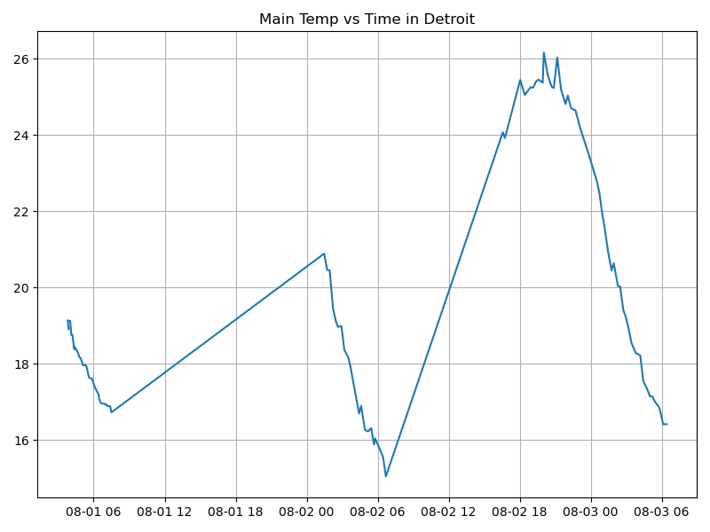
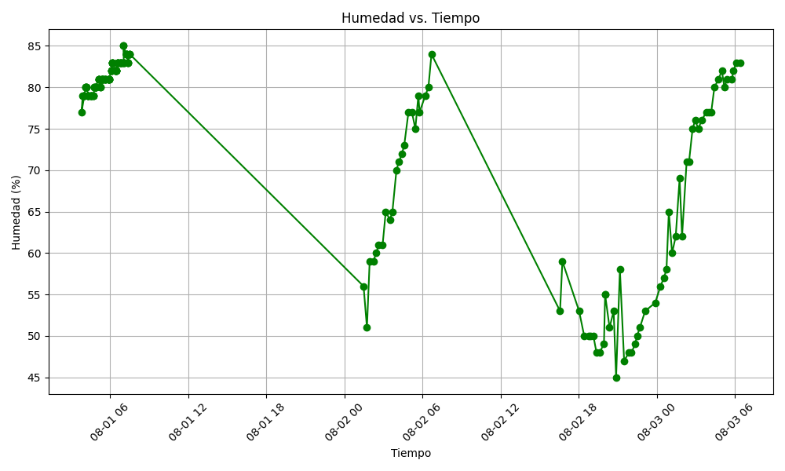
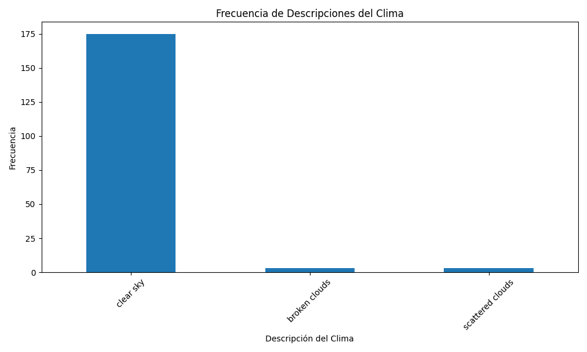

Clima en Detroit - Registro Automatizado
Descripción del Proyecto
Este proyecto tiene como finalidad simular un sistema de monitoreo ambiental que permita recolectar, registrar y presentar información climática de manera automatizada y continua. A través del uso de herramientas de programación, automatización en sistemas Linux y tecnologías web ligeras, se busca crear una solución sencilla, funcional y documentada que represente una aplicación real del desarrollo de software para la captura y análisis de datos externos.
Este proyecto tiene como objetivo realizar un registro automatizado de datos climatológicos en la ciudad de Detroit utilizando el API gratuito de OpenWeather.
Se desarrolló un script en Python que consulta los datos actuales del clima y los almacena en un archivo CSV. La recolección se realiza periódicamente cada 15 minutos utilizando crontab en un entorno Linux/WSL.
Registro Climatológico Automatizado para la Ciudad de Detroit
1. Formulación del Problema
Se desea realizar un registro climatológico de la ciudad de Detroit utilizando el API de OpenWeather. El sistema debe capturar datos cada 15 minutos y almacenarlos en un archivo CSV, de forma acumulativa.
El objetivo principal del proyecto es demostrar las habilidades adquiridas en el curso de Arquitectura de Computadores, incluyendo conocimientos de Linux, uso de Emacs/Jupyter y la configuración de un entorno para ciencia de datos con Mamba/Anaconda. Para lograrlo, se creará un script de Python que se conecte a la API de OpenWeather y obtenga datos climatológicos (temperatura, humedad, etc.) utilizando la latitud y longitud de la ciudad. Los resultados de cada consulta se registrarán en un archivo llamado `clima-detroit-hoy.csv`.
Además, se utilizará un script `sh` llamado `get-weather.sh` para automatizar la ejecución del programa de Python. La ejecución de este script se programará con `crontab` para que se realice cada 15 minutos, almacenando las salidas y errores en un archivo de registro llamado `output.log`.
2. Estructura del Proyecto
tree
├── CityTemperatureAnalysis.ipynb
├── clima-detroit-hoy.csv
├── get-weather.sh
├── main.py
├── output.log
└── weather-site
├── build-site.el
├── build.sh
├── content
│ └── images
│ ├── humidity.png
│ ├── optional_plot.png
│ └── temperature.png
├── index.org
├── index.org_archive
└── public
├── images
│ ├── humidity.png
│ ├── optional_plot.png
│ └── temperature.png
└── index.html
La estructura de carpetas se organiza para separar la lógica de la recolección de datos del contenido del sitio web. El directorio raíz contiene los scripts y los archivos generados automáticamente (`main.py`, `get-weather.sh`, `clima-detroit-hoy.csv` y `output.log`). Las gráficas que se generan (`temperature.png`, `humidity.png`) se guardan en el directorio `images/`.
3. Descripción del Código
3.1 Lectura del API
def get_weather_data(city, api_key, units): """Obtiene los datos del clima de la API de OpenWeatherMap.""" try: logging.info(f"Obteniendo datos del clima para {city}...") params = { 'q': city, 'appid': api_key, 'units': units } response = requests.get(BASE_URL, params=params) response.raise_for_status() # Lanza un error para códigos de estado HTTP 4xx/5xx data = response.json() return data except requests.exceptions.RequestException as e: logging.error(f"Error al conectar con la API: {e}") return None except KeyError as e: logging.error(f"Error al procesar los datos de la API. Falta la clave: {e}") logging.error(f"Respuesta completa: {response.text}") return None
3.2 Conversión de JSON a diccionario
def get_weather_data(city, api_key, units): """Obtiene los datos del clima de la API de OpenWeatherMap.""" try: logging.info(f"Obteniendo datos del clima para {city}...") params = { 'q': city, 'appid': api_key, 'units': units } response = requests.get(BASE_URL, params=params) response.raise_for_status() # Lanza un error para códigos de estado HTTP 4xx/5xx data = response.json() # Extrae los datos relevantes dt_utc = datetime.utcfromtimestamp(data['dt']) filtered_data = { 'dt': dt_utc.strftime('%Y-%m-%d %H:%M:%S'), 'coord_lon': data['coord']['lon'], 'coord_lat': data['coord']['lat'], 'weather_0description': data['weather'][0]['description'], 'main_temp': data['main']['temp'], 'main_feels_like': data['main']['feels_like'], 'main_temp_min': data['main']['temp_min'], 'main_temp_max': data['main']['temp_max'], 'main_pressure': data['main']['pressure'], 'main_humidity': data['main']['humidity'], 'wind_speed': data['wind']['speed'], 'wind_deg': data['wind']['deg'], 'clouds_all': data['clouds']['all'], 'city': data['name'], 'cod': data['cod'] } return filtered_data
3.3 Guardar datos en CSV
def save_to_csv(data, filename): """Guarda los datos en un archivo CSV.""" if data is None: return df_new_row = pd.DataFrame([data]) if not os.path.exists(filename): df_new_row.to_csv(filename, index=False) logging.info(f"Datos añadidos a '{filename}'. Filas totales: {len(df_new_row)}") else: df_existing = pd.read_csv(filename) df_combined = pd.concat([df_existing, df_new_row], ignore_index=True) df_combined.to_csv(filename, index=False) logging.info(f"Datos añadidos a '{filename}'. Filas totales: {len(df_combined)}")
4. Script ejecutable `.sh`
#!/usr/bin/sh source /home/<user>/miniforge3/etc/profile.d/conda.sh eval "$(conda shell.bash hook)" conda activate iccd332 python main.py
5. Configuración de `crontab`
*/15 * * * * cd /home/<user>/CityWeather && ./get-weather.sh >> output.log 2>&1
#+BEGINQUOTE [citestart]Este comando en crontab está configurado para ejecutar el script `get-weather.sh` cada 15 minutos[cite: 214]. [citestart]El comando `cd /home/andyuniversidad/CityWeather` asegura que la terminal se ubique en el directorio del proyecto antes de ejecutar el script[cite: 269].
El redireccionamiento de salida `>> output.log 2>&1` es crucial:
>> output.log` toma la salida estándar del script y la añade al archivo `output.log`[cite: 225].
2>&1` redirige cualquier error que ocurra durante la ejecución (salida de error estándar) al mismo archivo `output.log`[cite: 272].
[citestart]De esta manera, el archivo `output.log` contendrá tanto la información de la ejecución normal del script como cualquier mensaje de error, lo que te permite verificar que el proceso se está ejecutando correctamente cada 15 minutos[cite: 225, 272]. #+ENDQUOTE
6. Presentación de Resultados
6.1 Muestra aleatoria de datos
import pandas as pd df = pd.read_csv('/home/andyuniversidad/Proyecto_Fin_Bimestre_Arquitectura/clima-detroit-hoy.csv') print(df.sample(5))
6.2 Gráfica: Temperatura vs Tiempo

Figure 1: Temperatura vs Tiempo
6.3 Gráfica: Humedad vs Tiempo

Figure 2: Humedad vs Tiempo
6.4 Grafica Frecuencia Descripción Clima

Figure 3: Frecuencia Descripción Clima
7. Conclusiones
El desarrollo de este proyecto permitió aplicar diversos conocimientos de programación, automatización y publicación web en un entorno real y práctico. A continuación, se detallan algunas conclusiones relevantes:
- Integración de servicios externos: Se comprendió el uso de APIs y su interacción mediante scripts automatizados.
- Automatización con crontab: Fue posible establecer un sistema de recolección de datos autónomo en Linux.
- Procesamiento de datos climáticos: Se manejaron estructuras JSON y su conversión a CSV para análisis posterior.
- Uso de Emacs y org-mode: Se logró crear un sitio web estático con herramientas ligeras, sin depender de CMS pesados.
- Documentación y respaldo: El uso de GitHub permitió llevar un control de versiones y asegurar trazabilidad.
8. Referencias
Créditos y Licencia
Desarrollado por los futuros ingenieros Andres Alban y Andy Cabrera del curso de Arquitectura de computadoras en la facultad de Sistemas de la Escula politecnica nacional